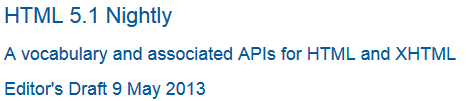
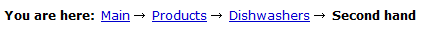

4.13. Common idioms without dedicated elements
4.13.1. Subheadings, subtitles, alternative titles and taglines
HTML does not have a dedicated mechanism for marking up subheadings, alternative titles or taglines. Here are the suggested alternatives.h1–h6 elements must not be used to markup subheadings, subtitles, alternative titles and taglines unless intended to be the heading for a new section or subsection.
header element.
As the author does not want the subtitles to be included the table of contents and they are not intended to signify
the start of a new section, they are marked up using p elements. A sample CSS styled rendering of the
title and subtitles is provided below the code example.
<header> <h1>HTML 5.1 Nightly</h1> <p>A vocabulary and associated APIs for HTML and XHTML</p> <p>Editor’s Draft 9 May 2013</p> </header>

<h1>The Lord of the Rings: The Two Towers</h1>

span element,
allowing it to be styled differently from the rest of the title. A br element is used to
place the album title on a new line. A sample CSS styled rendering of the heading is provided
below the code example.
<h1>Ramones <br> <span>Hey! Ho! Let’s Go</span> </h1>

header element.
The title is marked up using a h2 element and the tagline is in a p element. A sample CSS styled rendering of the
title and tagline is provided below the code example.
<header> <h2>3D films set for popularity slide </h2> <p>First drop in 3D box office projected for this year despite hotly tipped summer blockbusters, according to Fitch Ratings report</p> </header>

header element.
The title is marked up using a h1 element and the taglines are each in a p element. A sample CSS styled rendering of the
title and taglines is provided below the code example.
<header> <p>Magazine of the Decade</p> <h1>THE MONTH</h1> <p>The Best of UK and Foreign Media</p> </header>
4.13.2. Bread crumb navigation
This specification does not provide a machine-readable way of describing bread-crumb navigation
menus. Authors are encouraged to markup bread-crumb navigation as a list. The nav element can be used to mark the
list containing links as being a navigation block.
<nav> <h2>You are here:</h2> <ul id="navlist"> <li><a href="/">Main</a> →</li> <li><a href="/products/">Products</a> →</li> <li><a href="/products/dishwashers/">Dishwashers</a> →</li> <li><a>Second hand</a></li> </ul> </nav>
The breadcrumb code example could be styled as a horizonatal list using CSS: 
The use of the right angle bracket symbol ">" to indicate path direction is discouraged as its meaning, in the context used, is not clearly conveyed to all users.
4.13.3. Tag clouds#tag-cloudsReferenced in:4.8.6.12. Link type "tag"
This specification does not define any markup specifically for marking up lists
of keywords that apply to a group of pages (also known as tag clouds). In general, authors
are encouraged to either mark up such lists using ul elements with explicit inline
counts that are then hidden and turned into a presentational effect using a style sheet, or to use
SVG.
<style> @media screen, print, handheld, tv { /* should be ignored by non-visual browsers */ .tag-cloud > li > span { display: none; } .tag-cloud > li { display: inline; } .tag-cloud-1 { font-size: 0.7em; } .tag-cloud-2 { font-size: 0.9em; } .tag-cloud-3 { font-size: 1.1em; } .tag-cloud-4 { font-size: 1.3em; } .tag-cloud-5 { font-size: 1.5em; } } </style> ... <ul class="tag-cloud"> <li class="tag-cloud-4"><a title="28 instances" href="/t/apple">apple</a> <span>(popular)</span> <li class="tag-cloud-2"><a title="6 instances" href="/t/kiwi">kiwi</a> <span>(rare)</span> <li class="tag-cloud-5"><a title="41 instances" href="/t/pear">pear</a> <span>(very popular)</span> </ul>
The actual frequency of each tag is given using the title attribute. A CSS style sheet is provided to convert the markup into a cloud of differently-sized
words, but for user agents that do not support CSS or are not visual, the markup contains
annotations like "(popular)" or "(rare)" to categorize the various tags by frequency, thus
enabling all users to benefit from the information.
The ul element is used (rather than ol) because the order is not
particularly important: while the list is in fact ordered alphabetically, it would convey the
same information if ordered by, say, the length of the tag.
The tag rel-keyword is not used on these a elements because they do not represent tags that apply
to the page itself; they are just part of an index listing the tags themselves.
4.13.4. Conversations
This specification does not define a specific element for marking up conversations, meeting minutes, chat transcripts, dialogs in screenplays, instant message logs, and other situations where different players take turns in discourse.
Instead, authors are encouraged to mark up conversations using p elements and
punctuation. Authors who need to mark the speaker for styling purposes are encouraged to use span or b. Paragraphs with their text wrapped in the i element can be used for marking up stage directions.
<p> Costello: Look, you gotta first baseman? <p> Abbott: Certainly. <p> Costello: Who’s playing first? <p> Abbott: That’s right. <p> Costello becomes exasperated. <p> Costello: When you pay off the first baseman every month, who gets the money? <p> Abbott: Every dollar of it.
data element to provide Unix timestamps for each line. Note that the timestamps are
provided in a format that the time element does not support, so the data element is used instead (namely, Unix time_t timestamps).
Had the author wished to mark up the data using one of the date and time formats supported by the time element, that element could have been used instead of data. This
could be advantageous as it would allow data analysis tools to detect the timestamps
unambiguously, without coordination with the page author.
<p> <data value="1319898155">14:22</data> <b>egof</b> I’m not that nerdy, I’ve only seen 30% of the star trek episodes <p> <data value="1319898192">14:23</data> <b>kaj</b> if you know what percentage of the star trek episodes you have seen, you are inarguably nerdy <p> <data value="1319898200">14:23</data> <b>egof</b> it’s unarguably <p> <data value="1319898228">14:23</data> <i>* kaj blinks</i> <p> <data value="1319898260">14:24</data> <b>kaj</b> you are not helping your case
dl elements to list the possible responses at each point in the conversation.
Another option to consider is describing the conversation in the form of a DOT file, and
outputting the result as an SVG image to place in the document. [DOT]
<p> Next, you meet a fisherman. You can say one of several greetings: <dl> <dt> "Hello there!" <dd> <p> He responds with "Hello, how may I help you?"; you can respond with: <dl> <dt> "I would like to buy a fish." <dd> <p> He sells you a fish and the conversation finishes. <dt> "Can I borrow your boat?" <dd> <p> He is surprised and asks "What are you offering in return?". <dl> <dt> "Five gold." (if you have enough) <dt> "Ten gold." (if you have enough) <dt> "Fifteen gold." (if you have enough) <dd> <p> He lends you the boat. The conversation ends. <dt> "A fish." (if you have one) <dt> "A newspaper." (if you have one) <dt> "A pebble." (if you have one) <dd> <p> "No thanks", he replies. Your conversation options at this point are the same as they were after asking to borrow the boat, minus any options you’ve suggested before. </dl> </dd> </dl> </dd> <dt> "Vote for me in the next election!" <dd> <p> He turns away. The conversation finishes. <dt> "Sir, are you aware that your fish are running away?" <dd> <p> He looks at you skeptically and says "Fish cannot run, sir". <dl> <dt> "You got me!" <dd> <p> The fisherman sighs and the conversation ends. <dt> "Only kidding." <dd> <p> "Good one!" he retorts. Your conversation options at this point are the same as those following "Hello there!" above. <dt> "Oh, then what are they doing?" <dd> <p> He looks at his fish, giving you an opportunity to steal his boat, which you do. The conversation ends. </dl> </dd> </dl>
<section> <h1>Dialog</h1> <p><small>Some characters repeat their lines in order each time you interact with them, others randomly pick from amongst their lines. Those who respond in order have numbered entries in the lists below.</small> <h2>The Shopkeeper</h2> <ul> <li>How may I help you? <li>Fresh apples! <li>A loaf of bread for madam? </ul> <h2>The pilot</h2> <p>Before the accident: <ul> </li>I’m about to fly out, sorry! </li>Sorry, I’m just waiting for flight clearance and then I’ll be off! </ul> <p>After the accident: <ol> <li>I’m about to fly out, sorry! <li>Ok, I’m not leaving right now, my plane is being cleaned. <li>Ok, it’s not being cleaned, it needs a minor repair first. <li>Ok, ok, stop bothering me! Truth is, I had a crash. </ol> <h2>Clan Leader</h2> <p>During the first clan meeting: <ul> <li>Hey, have you seen my daughter? I bet she’s up to something nefarious again... <li>Nice weather we’re having today, eh? <li>The name is Bailey, Jeff Bailey. How can I help you today? <li>A glass of water? Fresh from the well! </ul> <p>After the earthquake: <ol> <li>Everyone is safe in the shelter, we just have to put out the fire! <li>I’ll go and tell the fire brigade, you keep hosing it down! </ol> </section>
4.13.5. Footnotes
HTML does not have a dedicated mechanism for marking up footnotes. Here are the suggested alternatives.
For short inline annotations, the title attribute could be used.
title attribute.
<p> <b>Customer</b>: Hello! I wish to register a complaint. Hello. Miss? <p> <b>Shopkeeper</b>: <span title="Colloquial pronunciation of 'What do you'" >Watcha</span> mean, miss? <p> <b>Customer</b>: Uh, I’m sorry, I have a cold. I wish to make a complaint. <p> <b>Shopkeeper</b>: Sorry, <span title="This is, of course, a lie.">we’re closing for lunch</span>.
Relying on the title attribute for the visual display
of text content is currently discouraged as many user agents do not expose the attribute in an accessible manner
as required by this specification (e.g., requiring a pointing device such as a mouse to cause a tooltip to appear,
which excludes keyboard-only users and touch-only users, such as anyone with a modern phone or
tablet).
If the title attribute is used, CSS can be used to
draw the reader’s attention to the elements with the attribute.
title attribute.
[title] { border-bottom: thin dashed; }
For
annotations, the a element should be used, pointing to
an element later in the document. The convention is that the
contents of the link be a number in square brackets.
<p> Announcer: Number 16: The <i>hand</i>. <p> Interviewer: Good evening. I have with me in the studio tonight Mr Norman St John Polevaulter, who for the past few years has been contradicting people. Mr Polevaulter, why <em>do</em> you contradict people? <p> Norman: I don’t. <sup><a href="#fn1" id="r1">[1]</a></sup> <p> Interviewer: You told me you did! ... <section> <p id="fn1"><a href="#r1">[1]</a> This is, naturally, a lie, but paradoxically if it were true he could not say so without contradicting the interviewer and thus making it false.</p> </section>
For side notes, longer annotations that apply to entire sections of the text rather than just
specific words or sentences, the aside element should be used.
<p> <span class="speaker">Customer</span>: I will not buy this record, it is scratched. <p> <span class="speaker">Shopkeeper</span>: I’m sorry? <p> <span class="speaker">Customer</span>: I will not buy this record, it is scratched. <p> <span class="speaker">Shopkeeper</span>: No no no, this is a tobacconist’s. <aside role="note"> <p>In 1970, the British Empire lay in ruins, and foreign nationalists frequented the streets — many of them Hungarians (not the streets — the foreign nationals). Sadly, Alexander Yalt has been publishing incompetently-written phrase books. </aside>
In the example above an ARIA role="note", permitted for use on aside,
has been added to override the default semantics of the aside element, as the use of the
element in this context, more closely matches the note role.
For figures or tables, footnotes can be included in the relevant figcaption or caption element, or in surrounding prose.
figure element is used to give a single legend to the combination of the table and
its footnotes.
<figure> <figcaption>Table 1. Alternative activities for knights.</figcaption> <table> <tr> <th> Activity <th> Location <th> Cost <tr> <td> Dance <td> Wherever possible <td> £0<sup><a href="#fn1">1</a></sup> <tr> <td> Routines, chorus scenes<sup><a href="#fn2">2</a></sup> <td> Undisclosed <td> Undisclosed <tr> <td> Dining<sup><a href="#fn3">3</a></sup> <td> Camelot <td> Cost of ham, jam, and spam<sup><a href="#fn4">4</a></sup> </table> <p id="fn1">1. Assumed.</p> <p id="fn2">2. Footwork impeccable.</p> <p id="fn3">3. Quality described as "well".</p> <p id="fn4">4. A lot.</p> </figure>